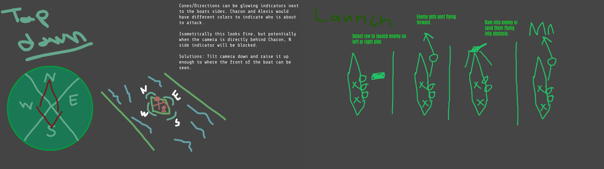
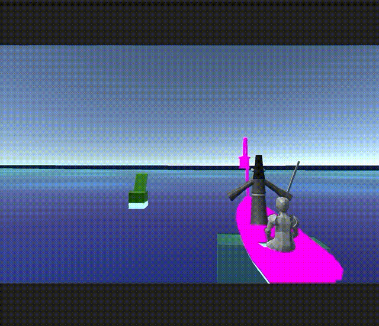

CHARON
- Combat Designer, in charge of the overall combat and enemy design and worked with the movement designers to incorporate combat into the game.
- Collaborated closely with the engineering team and sound team to establish the functionality and feel of the combat mechanic of the game.
- Gameplay Programmer, worked on the launching mechanic of the combat.
- Worked closely with the engineering team that worked on enemies to ensure the code with the launch would interact correctly with enemies and ensure transparency with all our variable types and functions. Download.
Charon is a third person action rower where you play as Charon, ferryman of the Underworld, who risks a treacherous journey to help his old friend reach her lost lover in the afterlife.
Featuring Acheron as the main set piece for the game, the player would ferry Alexis, a recently deceased traveler to meet with her lover in the afterlife. Facing harsh obstacles that the player would have to dodge around, fend off enemies attempting to grab onto the boat, and fighting with the river's current to create an exhilarating experience as to what it’s like to be the underworld's Ferryman.
Project Responsibilities:
Development visuals:
More to come soon!
Under the Hood:

Programming the launch of the enemy was important to get right as the feeling of launching had to be fun and as well coherent. This shows here the player is able to select the enemy and send them flying ahead, while the enemy gets damaged and bounces off whatever they hit. The arc itself had to be more controllable than what Unity offered for it’s default physics so I hard coded in a launching physics system to be customizable, allowing us to change the speed, arc and direction of the launch. This system is still being adjusted during the games development, but with feedback from further playtesting, the variables controlling the launch can easily be adjusted in the Unity inspector to modify it’s functionality.

Here is early development of the launch mechanic during the pre-production phase. On the left I initially wanted the boat to have 4 cardinal directions the player would pick from and whack the enemy that gets latched onto it. However with some playtesting, prototyping, and meetings with the movement design team, I shifted the design away from cardinals and rather the enemies latch onto the side, as shown on the left side and the player selects the row to attack, sending them flying away rather than having to mash to kill them. This had a better feel to the overall combat and intergated better with the movement of the game.

This here is one of the two enemies I designed, the hand enemy. It’s function in the game would reach out to the player and stop them from moving when they grab on if they hit. In order to get out the player would have to ram through it. This is still some early testing of it, as the code for it was a collaborative effort with one other on the engineering team, working together on the script for it. Making suggestions on how the hand enemy should work in code, what sort of things it needs to reference, and how it can be integrated into interacting with the ramming functionality were examples of communication we had to ensure the implementation of this enemy reflected what the design of it asked for.